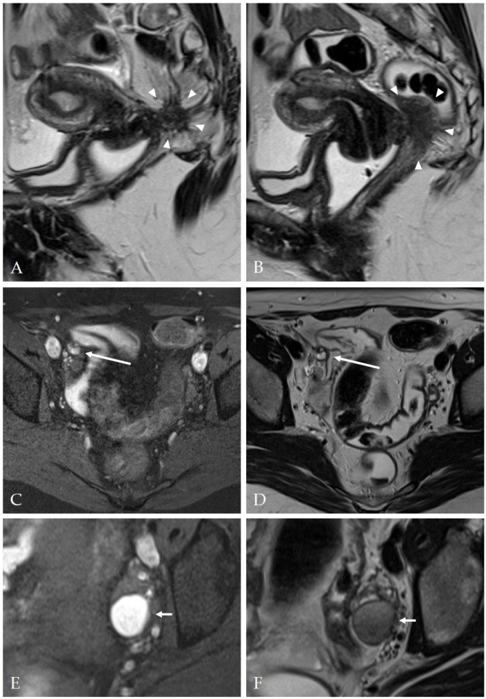
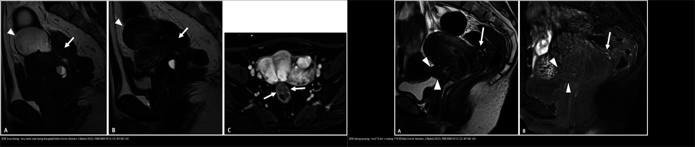
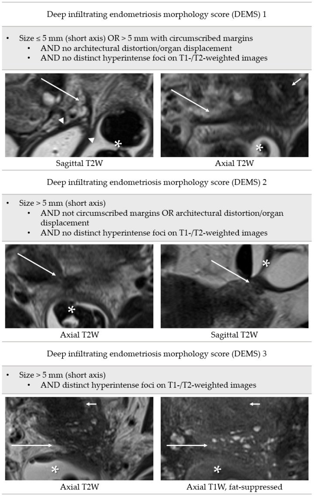
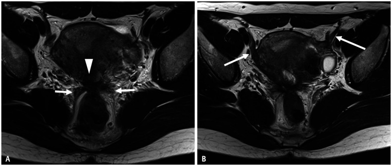
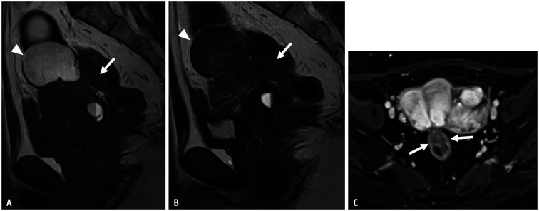
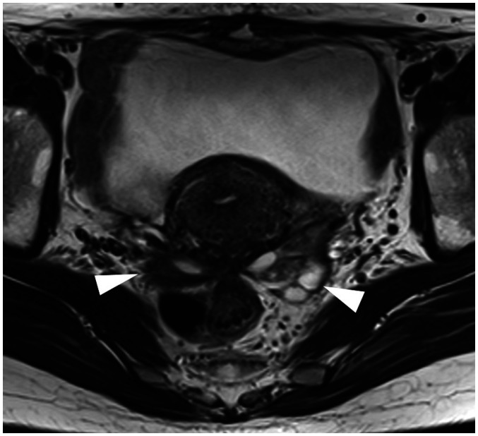

540 — DIE & PID: mũ nấm, hôn nhau & vòi giãn / Deep infiltrating endometriosis & PID
Tags: pattern:lac-noi-mac-sau vung:tieu-khung score:Enzian protocol:MRI-DIE
Mức chắc chắn (certainty): tổng hợp y văn (literature synthesis) — nhóm tự biên từ các bài tổng quan/nghiên cứu chẩn đoán mở (Korean J Radiol 2022 CC BY-NC; Diagnostics 2023 CC BY; BJR Case Rep 2026 CC BY 4.0); gồm ca nguyên văn có hình.
1. Tổng quan bệnh học – cơ chế hình ảnh
- DIE (deep infiltrating endometriosis): mô lạc nội mạc xâm nhập sâu > 5 mm dưới phúc mạc, gây viêm–xơ mạn. Hai mặt của cùng một tổn thương trên MRI: xơ cơ phản ứng (T2 tối) + ổ tuyến xuất huyết (T1 fat-sat sáng).
- TẠI SAO cặp đôi này là "vàng" (vật lý MRI + mô bệnh): sợi collagen xơ hút nước rất ít → T2 tối; các tuyến nội mạc còn sống chảy máu theo chu kỳ → T1 sáng (không mất tín hiệu khi fat-sat) vì chứa methemoglobin (sản phẩm máu cũ). Do đó tổn thương DIE điển hình = khối/đám T2 tối + ổ/bờ T1 sáng.
- Mũ nấm (mushroom cap sign): cơ trực tràng phì đại (T2 tối) đội niêm mạc phù (T2 sáng) — TẠI SAO = u ăn vào lớp cơ chứ không chỉ dính ngoài (Enzian C). Kido 2022 ghi nhận mũ nấm ở độ cao 16 mm tính từ bờ hậu môn.
- PID/TOA: vòi ứ mủ giãn + vách không hoàn toàn (incomplete septa) + dấu "bánh răng cưa" (cogwheel) — TẠI SAO: các nếp vòi phù nhưng chưa dính hẳn; sốt + CRP + lậu/Chlamydia là bối cảnh.
- "Hôn nhau" (kissing ovaries): hai buồng trứng dính vào nhau/sau tử cung = dính nặng (Kido 2022: hai buồng trứng + trực tràng tập trung tại torus uterinus) → vô sinh, gỡ dính + IVF.
- Ngưỡng định lượng bắt buộc:
- DIE = tổn thương sâu > 5 mm dưới phúc mạc.
- Dây chằng cùng-ụt (USL) dày/nốt thành dải T2 tối liên tục từ torus uterinus ra sau.
- Xơ hóa thành Douglas (Douglas obliteration): nâng cùng đồ sau âm đạo + trực tràng bị "kéo" dính vào tử cung + mảng xơ phủ mặt thanh mạc tử cung.
- Hệ #Enzian(m) trên MRI (khoang/tạng): O buồng trứng · A khoang trực tràng–âm đạo · B dây chằng cùng-ụt/parametrium · C trực tràng · FA adenomyosis khu trú · FB bàng quang · FU niệu quản · FI ruột khác · FO nơi khác.
- Điểm hình thái DIE/DEMS (Harth 2023, n=160, đối chiếu laparoscopy): DEMS 1 ≤ 5 mm hoặc > 5 mm bờ khu trú, không biến dạng cấu trúc, không ổ tăng tín hiệu; DEMS 2 > 5 mm, bờ không khu trú/biến dạng; DEMS 3 > 5 mm + ổ tăng tín hiệu rõ trên T1/T2. Hiệu năng chung: Se 67,0%, Sp 84,7%, PPV 84,3%, NPV 67,8%, LR+ 4,39, LR− 0,39; khi áp tiêu chuẩn chặt DEMS 3 → PPV 100%, NPV 59,0% (dương tính là chắc, âm tính KHÔNG loại trừ).
2. Mẫu hình + chẩn đoán phân biệt theo vị trí (gamut)
- Ba câu hỏi gỡ rối: (1) có xơ T2 tối không? (2) có ổ/bờ T1 fat-sat sáng không? (3) có biến dạng cấu trúc/kéo dính tạng không?
- Theo vị trí (giải phẫu #Enzian):
- Torus uterinus + dây chằng cùng-ụt (B): dải T2 tối dày, mất đối xứng → DIE (hay gặp nhất).
- Khoang trực tràng–âm đạo (A) & thành trực tràng (C): mũ nấm + xơ hóa Douglas → cần phẫu thuật viên đại–trực tràng.
- Bàng quang (FB)/niệu quản (FU): khối T2 tối mặt sau bàng quang + ổ T1 sáng → giả u bàng quang (mô tả Kido 2022), nguy cơ chèn niệu quản → ứ nước thận.
- Buồng trứng (O): endometrioma (T1 rất sáng + T2 "shading") — xem bài 537/530.
- Gamut "đau chậu mạn + khối/xơ": DIE · adenomyosis · PID/TOA · u xơ · u buồng trứng ác · u quái · nang tailgut · lymphangioleiomyomatosis (hiếm).

DIE xâm lấn vòm âm đạo và trực tràng (A/B: khối T2 tối bờ không rõ + ổ tăng tín hiệu), nốt thành bên chậu phải (C/D), và endometrioma điển hình T1 sáng/T2 "shading" (E/F). Nguồn: Harth S et al., Diagnostics 2023 (PMC10217213), CC BY 4.0.3. Bảng so sánh phân biệt (ma trận đối chiếu)
| Thực thể (entity) | Hình ảnh điển hình | Chốt vào (rule-in) | Chốt loại (rule-out) | Gợi ý xác nhận |
|---|---|---|---|---|
| DIE trực tràng (Enzian C) | Xơ T2 tối + ổ T1 sáng + mũ nấm | Mũ nấm = xâm lấn lớp cơ | Vòi giãn + cogwheel + sốt → PID | Mổ phối hợp tiêu hóa; MRI lát mỏng |
| DIE dây chằng cùng-ụt (Enzian B) | Dải T2 tối > 3 mm, mất đối xứng + nốt | Torus uterinus + USL dày + ổ T1 sáng | Đối xứng, không ổ máu → thường | Bóc + bảo tồn thần kinh |
| DIE bàng quang (Enzian FB) | Khối T2 tối mặt sau bàng quang + ổ T1 sáng | Ổ T1 sáng + tăng đậm cơ detrusor | Khối bờ gai, ngấm mạnh kiểu K → sinh thiết | Soi bàng quang + MRI; kiểm tra niệu quản |
| Endometrioma (Enzian O) | T1 rất sáng + T2 "shading", vỏ mỏng | T1 sáng không mất khi fat-sat | T1 sáng MẤT khi fat-sat → u quái (mỡ) | MRI T2/T1FS; theo dõi nguy cơ EAOC |
| PID / TOA | Vòi giãn + vách không hoàn toàn + cogwheel, thâm nhiễm mỡ | Sốt + CRP + lậu/Chlamydia | Xơ T2 tối + ổ máu → DIE | Kháng sinh ± dẫn lưu (đừng mổ cắt vội ở người trẻ) |
| Dính nặng | Kissing ovaries + nang lạc + vô sinh | Hai buồng trứng hôn nhau sau tử cung | Không dính, đơn ổ → tổn thương khu trú | Gỡ dính + IVF |

Trái: DIE trực tràng — xơ hóa Douglas + mũ nấm thành trước trực tràng (mũi tên), ở độ cao 16 mm. Phải: DIE bàng quang — nốt T2 tối quanh torus uterinus + ổ T1 fat-sat sáng lan tới thành bàng quang (giả u bàng quang). Nguồn: Kido A et al., Korean J Radiol 2022 (PMC8961012), CC BY-NC 4.0. Ảnh ghép letterbox, giữ nguyên tỷ lệ.Dấu hiệu chốt then chốt
- Xơ T2 tối + ổ T1 fat-sat sáng = chữ ký DIE (xơ không chảy máu, tuyến chảy máu theo chu kỳ).
- Mũ nấm = DIE đã ăn vào lớp cơ trực tràng → gọi phẫu thuật đại–trực tràng trước mổ.
- DEMS 3 (ổ tăng tín hiệu rõ) có PPV 100% nhưng NPV chỉ 59% → MRI dương là chắc, MRI âm không loại trừ DIE.
4. Protocol chụp + hệ phân độ/điểm chuẩn hóa
- MRI chậu DIE: T2W 3 mặt phẳng (axial + sagittal + coronal) + T1W fat-sat (ổ xuất huyết) + DWI (tổn thương tế bào) + DCE; cân nhắc gel âm đạo/trực tràng và thuốc chống nhu động để đánh giá thành trực tràng và vách âm đạo.
- Chỉ định: đau chậu mạn/khó giao hợp/vô sinh; US đầu tay; MRI để lập bản đồ tổn thương trước mổ.
- Khi sốt + đau hố chậu: siêu âm + cấy (lậu/Chlamydia) → hướng PID/TOA (kháng sinh ± dẫn lưu).
- Phân độ: #Enzian(m) A/B/C/O/FA/FB/FU/FI/FO; DEMS 1–3 (Se 67,0%/Sp 84,7%; DEMS 3 → PPV 100%).

Định nghĩa DEMS 1–3: kích thước, bờ/biến dạng cấu trúc và ổ tăng tín hiệu T1/T2. Mũi tên dài = DIE; mũi tên đầu = vòm âm đạo; hoa thị = trực tràng–đại tràng sigma. Nguồn: Harth S et al., Diagnostics 2023 (PMC10217213), CC BY 4.0.flowchart TD
A[Dau chau man / vo sinh / sot] --> B{Xo T2 toi + o T1 fat-sat sang?}
B -->|Co + mu nam| C[DIE-C truc trang: mo + tieu hoa phoi hop]
B -->|Co, khong mu nam| D[DIE-B/A/Bang quang: boc + bao ton than kinh, kiem tra nieu quan]
B -->|Khong + voi gian + cogwheel + sot| E[PID/TOA: khang sinh + dan luu]
B -->|Khong + kissing ovaries| F[Dinh nang: go dinh + IVF]
A --> G[DEMS tren MRI: 3 = o tang tin hieu ro, PPV 100%; am tinh KHONG loai tru]
5. Biến thể bình thường và cạm bẫy
- DIE "rụng dâu" sau kích thích tố/IVF giả K (ca nguyên văn trong bài) — ổ T1 sáng + xơ + ngấm mạnh; sinh thiết xác nhận lành, đừng mổ K oan.
- TOA vỡ + sốc tưởng DIE mạn — sốt + vỡ là mổ cấp cứu, không điều trị nội khoa đơn thuần.
- MRI âm KHÔNG loại trừ DIE: NPV chung chỉ 67,8% (và 59% nếu chỉ tính DEMS 3) → đau nhiều mà MRI âm vẫn phải soi ổ bụng.
- Ổ T1 sáng "giả": nang xuất huyết cơ năng, endometrioma, u quái (T1 sáng mất khi fat-sat = mỡ), máu tụ; đối chiếu T2 + fat-sat để tránh nhầm.
- Cạm bẫy mặt cắt: dây chằng cùng-ụt và trực tràng dễ bị "bỏ qua" nếu chỉ đọc axial — luôn đọc sagittal T2 để thấy mũ nấm và xơ hóa Douglas.
6. Tự lượng giá — Blind Quiz ngay trên trang tĩnh
Ca 1 — Nữ 45 tuổi, đau chậu mạn + rong kinh. Nhìn axial T2, mô tả trước.

- Gợi ý lâm sàng (clinical context): 45 tuổi, đau chậu mạn, rong kinh, khó giao hợp.
- Câu hỏi: Dấu hiệu nào gợi DIE? Phân bố tổn thương theo #Enzian?
Bấm để hiện đáp án (findings + chẩn đoán)
- Dấu hiệu (findings): torus uterinus xơ dày (mũi tên đầu) + dây chằng cùng-ụt hai bên dày không đều liên tục (mũi tên); trực tràng bị kéo căng dính vào torus uterinus — dấu dính nặng; dây chằng tròn cũng dày.
- Chẩn đoán (diagnosis): DIE vùng B (torus/USL) + xơ hóa Douglas — cần mổ bóc tổn thương và bảo tồn thần kinh; đánh giá thêm A/C.
- Nguồn ảnh: Kido A et al., Korean J Radiol 2022, PMC8961012, Fig. 9, CC BY-NC 4.0 (nguyên bản, không crop/ghép).
Ca 2 — Nữ 33 tuổi, đau chậu + ra máu sau kích trứng IVF. Sagittal T1/T2 + DCE.

- Gợi ý lâm sàng: 33 tuổi, đau chậu, ra máu sau kích trứng.
- Câu hỏi: Mũ nấm ở đâu? DIE hay ung thư? Có cần gọi phẫu thuật viên tiêu hóa?
Bấm để hiện đáp án (findings + chẩn đoán)
- Dấu hiệu (findings): nang lạc nội mạc buồng trứng (mũi tên đầu: T1 sáng, T2 shading) + mũ nấm thành trước trực tràng (mũi tên) ở độ cao 16 mm + dính trực tràng–tử cung, xơ phủ thanh mạc tử cung; trên DCE tổn thương ngấm thuốc, chiếm > 1/2 chu vi trực tràng.
- Chẩn đoán (diagnosis): DIE trực tràng (Enzian C) — xâm lấn cơ trực tràng > 1/2 chu vi → cần phẫu thuật đại–trực tràng phối hợp. Ổ T1 sáng + xơ giả "khối K"; sinh thiết xác nhận lành trước khi mổ lớn.
- Nguồn ảnh: Kido A et al., Korean J Radiol 2022, PMC8961012, Fig. 6, CC BY-NC 4.0 (nguyên bản, không crop/ghép).
Ca 3 — Nữ 43 tuổi, đau bụng dưới. Hai buồng trứng dính sau tử cung. Dấu hiệu gì?

- Gợi ý: 43 tuổi, đau bụng dưới, khám thấy khối dính.
- Câu hỏi: Hình ảnh "hôn nhau" nghĩa là gì? Hệ quả sinh sản?
Bấm để hiện đáp án (findings + chẩn đoán)
- Dấu hiệu (findings): hai buồng trứng + trực tràng tập trung về phía torus uterinus (mũi tên đầu) — dấu "kissing ovaries", chỉ điểm dính nặng trong chậu.
- Chẩn đoán (diagnosis): lạc nội mạc sâu/ dính nặng — liên quan vô sinh → gỡ dính (bảo tồn buồng trứng) ± IVF.
- Nguồn ảnh: Kido A et al., Korean J Radiol 2022, PMC8961012, Fig. 10, CC BY-NC 4.0 (nguyên bản, không crop/ghép).
Ca 4 — Ảnh ghép: hai vị trí DIE. Bên nào là trực tràng (mũ nấm), bên nào là bàng quang (giả u)?
- Gợi ý: một ca đau hậu môn–trực tràng khi hành kinh; một ca tiểu buốt/tiểu máu chu kỳ.
- Câu hỏi: Dấu hiệu phân biệt? Cần kiểm tra thêm gì?
Bấm để hiện đáp án (findings + chẩn đoán)
- Trái: DIE trực tràng (mũ nấm) — cơ trực tràng phì đại T2 tối đội niêm mạc → xâm lấn cơ, gọi phẫu thuật tiêu hóa.
- Phải: DIE bàng quang (giả u) — nốt T2 tối + ổ T1 fat-sat sáng lan tới thành bàng quang; cần kiểm tra niệu quản (ứ nước thận) và soi bàng quang.
- Nguồn: Kido A et al., Korean J Radiol 2022, PMC8961012 (CC BY-NC 4.0).
Ca 5 — Nữ 30 tuổi, sốt + đau hố chậu trái. Vòi giãn + cogwheel. DIE hay PID?
Bấm để hiện đáp án (findings + chẩn đoán)
- PID/TOA — vòi giãn + vách không hoàn toàn + cogwheel + sốt/CRP; xử trí kháng sinh ± dẫn lưu, tránh mổ cắt vội ở người trẻ. Khác DIE (xơ T2 tối + ổ T1 sáng, thường không sốt).
- Nguồn số: nguyên tắc chung; xem bảng mục 3.
Bài liên quan chéo
- 500 – Tổng quan Vú & SPK
- 520 – Tử cung: u xơ/FIGO/adenomyosis (adenomyosis, JZ)
- 530 – Phần phụ O-RADS (endometrioma, xoắn)
- 537 – U buồng trứng giáp biên (nang dịch kính mờ)
- 545 – MR động học sàn chậu (anismus, tổng phân)
Ảnh
- 7 ảnh gốc (Korean J Radiol 2022 CC BY-NC ×5; Diagnostics 2023 CC BY 4.0 ×2; BJR Case Rep 2026 CC BY 4.0 ×1) + 1 ảnh ghép CC BY-NC 4.0 kế thừa. Nguồn + giấy phép từng ảnh trong
images/CREDITS.md.
Không dùng để chẩn đoán độc lập khi chưa có người hướng dẫn.